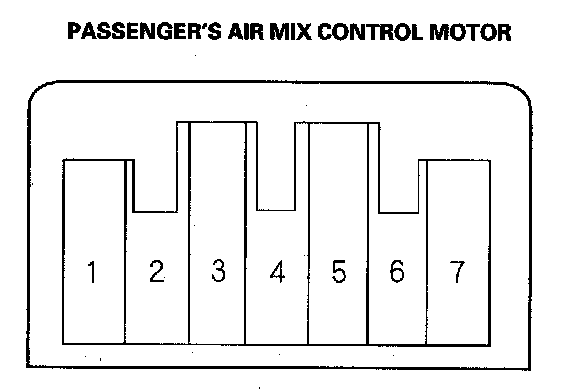

Passenger's Air Mix Control Motor Test
Passenger's Air Mix Control Motor TestNOTE: Before testing, check for HVAC DTCs.
1. Disconnect the 7P connector from the passenger's air mix control motor.
NOTE: Incorrectly applying power and ground to the passenger's air mix control motor will damage it. Follow the instructions carefully.

2. Connect battery power to the No. 1 terminal of the passenger's air mix control motor, and ground the No. 2 terminal; the passenger's air mix control motor should run, and stop at Max Cool. If it doesn't, reverse the connections; the passenger's air mix control motor should run, and stop at Max Hot. When the passenger's air mix control motor stops running, disconnect battery power immediately.
3. If the passenger's air mix control motor did not run in step 2, remove it, then check the passenger's air mix control linkage and door for smooth movement.
- If the linkage and door move smoothly, replace the passenger's air mix control motor.
- If the linkage or door sticks or binds, repair them as needed.
- If the passenger's air mix control motor runs smoothly, go to step 4.
4. Measure the resistance between the No. 5 and No. 7 terminals. It should be between 4.2 to 7.8 kohms.
5. Reconnect the passenger's air mix control motor 7P connector, then turn the ignition switch ON (II).
6. Using the backprobe set, measure the voltage between the No. 3 and No. 7 terminals.
Max Cool: about 1.5 V
Max Hot: about 4.5 V
7. If either the resistance or voltage readings are not as specified, replace the passenger's air mix control motor.